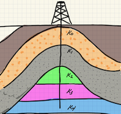
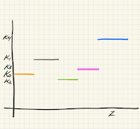
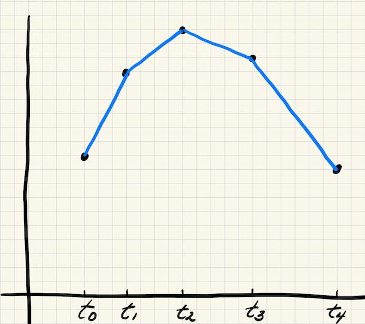
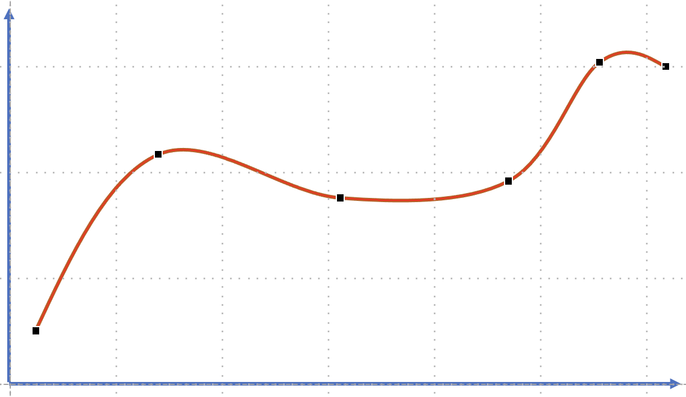

Code
today <- Sys.Date()
format(today, format="Revised: %B %d %Y")[1] "Revised: May 07 2024"Lecture 18: November 2, 2023
So far we’ve spent a lot of time discussing the good properties of polynomial interpolants. However, they also have several shortcomings. Among these, we list four here:
The error term may not be small. Theorem 17.2 showed that the error bound depended on both the size of the interval as well as the higher derivatives, which could be large.
Higher order polynomials oscillate (wiggle) a lot. When fitting data that doesn’t have a lot of oscillations the polynomial will not match the data in certain areas of the interval (usually near the ends of the intervals).
Data are often only piecewise smooth, but polynomials are infinitely differentiable. Asking a polynomial to fit data that isn’t as smooth as itself may not be fair.
Changing a single data point could drastically alter the entire interpolant
As we discussed in the practical tips section (Section 17.2), it is best to think of using 1) low-order polynomials, 2) within small intervals, 3) and only think of them as local approximations.
This leads us to think about using an alternative approach, which can be briefly described as:
Instead of finding one single polynomial to fit all the data find a set of polynomials for different regions within the given interval.
In more detail, this approach can be described as:
Divide the interval \([a,b]\) into a set of smaller subintervals (elements)\[ a = t_0 < t_1 < \ldots < t_r = b.\] The \(t_i\) are often referred to as break points, or sometimes just knots.
Fit a low-degree polynomial \(s_i(x)\) in each of the subintervals \([t_i,t_{i+1}],\ \ i=0, \ldots r-1\)
Patch (glue) the polynomials together so that \[v(x) = s_i(x), \ \ t_i \leq x \leq t_{i+1} \ \ i = 0, \ldots r-1.\]
Example 18.1 Suppose we were given the following data points
| \(x\) | 1 | 2 | 4 | 5 | 6 |
| \(y\) | 1 | 1.8 | 2 | 1.8 | 0.5 |
Consider using the Newton form for a linear polynomial within each of the sub-intervals.
\[ v(x) = s_i(x) = f(x_i) + f[x_i, x_{i+1}] (x - x_i), \\ \quad t_i \leq x \leq t_{i+1}, \quad 0 \leq i \leq 4. \]
Here note that for now, \(t_i = x_i\)
For example, for \(i=0\), we would have:
\[ \begin{aligned} s_0(x) &= f(x_0) + f[x_0, x_{1}] (x - x_0), \\ &= 1 + \frac{1.8 - 1}{2 -1} (x-1), \\ &= 1 + 0.8 (x - 1). \end{aligned} \]
Likewise, we would then compute \(s_1, s_2, s_3, s_4.\)
It turns out to be fairly easy to compute an error bound for this case (we’ve done most of the heavy lifting in the previous sections already).
First let’s provide some notation to help us in this new situation.
Let
\[ \begin{aligned} n &= r &\mbox{number of subintervals} \\ t_i &= x_i \\ h &= \max_{1 \leq i \leq n} (t_i - t_{i+1}) &\mbox{maximum subinterval size} \end{aligned} \]
Claim:
\[ \Big | f(x) - v(x) \Big | \leq \frac{h^2}{8} \max_{a \leq \xi \leq b} f^{\prime\prime} (\xi), \] for any \(x \in [a,b].\)
Proof: First, let’s note that for any $x \in [a,b], $ it must lie in some interval, say \(i,\) therefore \(t_{i-1} \leq x \leq t_{i}.\) We can now apply Equation 17.1, and since we are using linear interpolation, \(n=1\), the bound states that:
\[ f(x) - v(x) = \frac{f^{\prime\prime} (\xi)}{2!}(x - t_{i-1})(x-t_{i}). \tag{18.1}\]
Next we note that the maximum of the quantity \((x - t_{i-1})(x-t_{i})\) occurs at the point
\[ x = \frac{t_{i-1} + t_i}{2}. \]
(We did this in class, so we won’t repeat it here).
Therefore we can say that:
\[ \begin{aligned} \Big | (x - t_{i-1})(x-t_{i}) \Big | &\leq \Big | \Big ( \frac{t_{i} - t_{i-1}}{2} \Big )^2\Big |, \\ & \leq \frac{h^2}{4}. \end{aligned} \]
The result now follows by substituting this back into Equation 18.1.
Before moving to higher order piecewise interpolation, it might be good to note that sometimes it is useful to consider piecewise constants. This approach could be used, for example in applications where the data is known to have discontinuities. One application we presented in class was that of modeling the subsurface of the earth in oil reservoir and geophysical exploration models.


Piecewise linear polynomials appear to be a good compromise but they do have one clear disadvantage – the final interpolant will likely have corners at the knots.

What if we want to have a smoother interpolant? This could be quite important if we are trying to approximate a function that is known to have certain smoothness properties, or if we are modeling some physical or engineering problem that we wish to have smoothness, such as an airplane wing or a car body.
The most popular approach for creating a smooth piecewise interpolant is known as cubic splines.

Let’s consider a cubic interpolant for the \(ith\) interval, which we can write as:
\[ v(x) = s_i(x) = a_i + b_i (x-t_i)+ c_i (x-t_i)^2 + d_i (x-t_i)^3 .\]
Note that there are 4 unknowns \(a_i, b_i, c_i, d_i\) per sub-interval. Hence there are \(4n\) unknowns in total. That means if we want to have a unique solution, we need to also have \(4n\) equations (conditions) specified.
The usual approach is to generate these equations through a combination of:
interpolation conditions, and
continuity conditions
Let’s first note that in the linear case we had:
\[ \begin{aligned} s_i(t_i) &= f(t_i), & i = 0, 1, \ldots, n-1, \\ s_i(t_{i+1}) &= f(t_{i+1}), & i = 0, 1, \ldots, n-1. \end{aligned} \tag{18.2}\]
This gave us \(2n\) conditions for the \(2n\) unknowns. In addition, continuity was implied because
\[ s_i(t_{i+1}) = f(t_{i+1}) = s_{i+1}(t_{i+1}). \]
With cubic splines, we can use the interpolating conditions (Equation 18.2) to give us \(2n\) conditions. The question before us now is how to choose the additional \(2n\) conditions required to give us a unique solution.
Use remaining \(2n\) conditions so as to satisfy \(v(x) \in C^2[a,b].\) In other words, ensure that the spline is twice-continuously differentiable, i.e.
\(s_i(x)\) is continuous at the knots
\(s_i^\prime(x)\) is continuous at the knots
\(s_i^{\prime\prime}(x)\) is continuous at the knots
Mathematically, this idea translates into:
\[ \begin{aligned} s_i(t_i) &= f(t_i), & i = 0, 1, \ldots, n-1, & \quad n \ \mbox{conditions}\\ s_i(t_{i+1}) &= f(t_{i+1}), & i = 0, 1, \ldots, n-1, & \quad n \ \mbox{conditions}\\ s_i^{\prime}(t_{i+1}) &= s_{i+1}^{\prime}(t_{i+1}), & i = 0, 1, \ldots, n-2,& \quad n-1 \ \mbox{conditions} \\ s_i^{\prime\prime}(t_{i+1}) &= s_{i+1}^{\prime\prime}(t_{i+1}), & i = 0, 1, \ldots, n-2, & \quad n-1 \ \mbox{conditions}\\ \end{aligned} \]
It is important to note that the last two conditions only hold at the internal knots since that is where two splines meet and need to be aligned to maintain continuity of the derivatives. Counting up the conditions therefore leaves us with only \(4n-2\) conditions.
There are two popular approaches to resolving this problem:
Free boundary (natural spline):\[v^{\prime\prime}(t_0) = v^{\prime\prime}(t_n) = 0\]
Clamped boundary:\[\begin{aligned} v^{\prime\prime}(t_0) &= f^\prime(t_0),\\ v^{\prime\prime}(t_n) &= f^\prime(t_n). \end{aligned} \]
The free boundary approach is the easiest to implement and apply. However, it is rather arbitrary and there is no a priori reason to expect it to be true.
The clamped boundary approach is more realistic, but has the disadvantage of requiring the second derivative of the function. If the second derivative is known (or can be approximated) however, this approach would be preferred.
This section covered the idea of using piecewise interpolating polynomials within subintervals of the domain as opposed to using one single polynomial over the entire domain. This approach has several advantages over using one polynomial including the ability to take into account more of the structure of the problem as well as producing smoother interpolants over the entire region.
today <- Sys.Date()
format(today, format="Revised: %B %d %Y")[1] "Revised: May 07 2024"